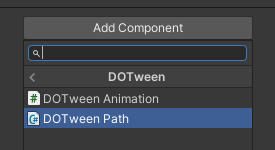
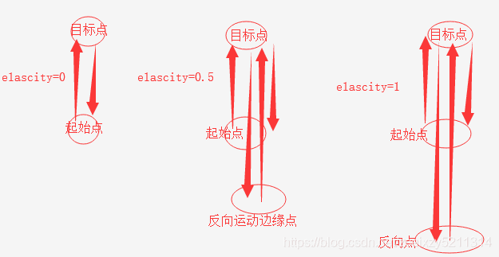
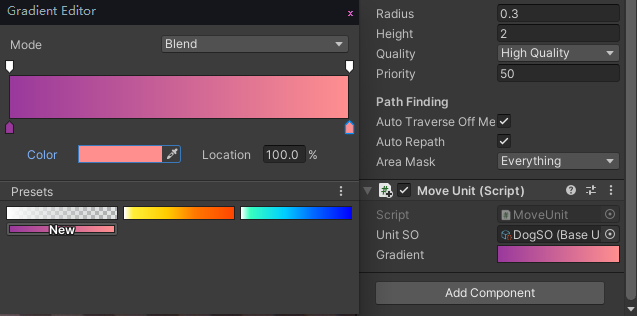

使用DOTween前应先引用命名空间
using DG.Tweening;
-
一些基本概念
DOTween是基于Tweener 或 TweenerCore（继承至Tweener）（可以理解为补间动画）来实现一些变量的缓动变换效果的。
- Tweener：补间动画
- Sequence：补间动画序列，相当于一个Tweener的链表，可以通过执行一个Sequence来执行一连串的Tweener
- Tween：泛指Tweener或者Sequence
- Nested tween：Sequence中的一个Tweener称为一个Nested tween
-
DOTWeen的可视化编辑
可以在Inspectors面板添加DOTween的Component只有两个：
DOTween Animation和DOTween Path用法很简单，操作一下就会了，这里就不细说。
-
Tween的生命周期
- 当创建一个动画时将会自动播放（除非修改全局defaultAutoPlay行为）
- 当一个动画播放完毕后将会被自动销毁（除非修改全局defaultAutoKill行为）
- 如果希望重复使用动画，应该将Tweener设置为SetAutoKill(false)
- 当动画目标为空时，将可能会抛出一个
playing errow错误，如果不希望此错误抛出可以选择激活safe mode
Tweener的生命周期回调函数:
OnStart (TweenCallback callback);//动画开始时执行 OnPlay (TweenCallback callback);//动画播放时执行 OnUpdate (TweenCallback callback);//动画帧更新时执行 OnPause (TweenCallback callback);//动画暂停时执行 OnComplete (TweenCallback callback);//动画播放结束时执行，倒放不执行 OnSetComplete (TweenCallback callback)//在动画完成一个循环时执行，并且前放和倒放都会执行 OnKill (TweenCallback callback);//动画销毁时执行 OnRewind (TweenCallback callback);//动画重播时执行 OnWaypointChange (TweenCallback<int> callback);//动画在路径点变化时执行 -
部分API用法
部分参考了Andy老师的文章
DOTween全局设置
static LogBehaviour DOTween.logBehaviour //根据选择的模式，DOTween将仅记录错误，错误和警告或所有其他信息。 //LogBehaviour.ErrorsOnly:记录错误，仅此而已。 //LogBehaviour.Default:记录错误和警告。 //LogBehaviour.Verbose:记录错误，警告和其他信息。 static bool DOTween.showUnityEditorReport//若为TRUE，则退出播放模式时（仅在编辑器中）您将获得DOTween报告 static float DOTween.timeScale//全局的时间膨胀 static bool DOTween.useSafeMode//使用安全模式 static DOTween.SetTweensCapacity(int maxTweeners, int maxSequences)//设置Tweens容量 static bool DOTween.defaultAutoKill//是否自动销毁 static AutoPlay DOTween.defaultAutoPlay//是否自动播放 static float DOTween.defaultEaseOvershootOrAmplitude//应用于Eases的缓存幅度,默认1.70158f static float DOTween.defaultEasePeriod//默认的数据段 static Ease DOTween.defaultEaseType//默认的Ease类型，默认为OutQuad static LoopType DOTween.defaultLoopType//默认的循环类型，默认为Restart static bool DOTween.defaultRecyclable//如果为true，则当Tween完成时就会被回收，否则就会被destroy static bool DOTween.defaultTimeScaleIndependent//是否使用unity的timeScale static UpdateType DOTween.defaultUpdateType//默认的帧更新函数DOTween创建补间
-
DOTween.To()API：
To(DOGetter<RectOffset> getter, DOSetter<RectOffset> setter, RectOffset endValue, float duration); //getter:一个回调委托，指明要缓动的变量 //setter:一个回调委托,返回通过setter和endValue进行插值计算的结果 //endValue:缓动的目标结果 //duration:时间间隔，指明该缓动动画将在duration秒内完成可以理解为开了一个"协程"去反复计算插值
比如通过以下的代码来将obj的位置在2s内移动到(10,10,10)
private Vector3 before; public GameObject obj; void Start() { before = obj.transform.position; Vector3 after = new Vector3(10,10,10); float time=2f; //每帧按插值更新before的值，直到before等于after DOTween.To(()=>before, lerp=>before=lerp, after, time); } //需要在Update中去同步更新的值 void Update() { obj.position = before; }
DOTween.ToAxis()将a的单轴Vector3从其当前值补间到给定轴，用法和TO类似 ```C# // 在1秒内将称为myVector的Vector3的X补间到3 DOTween.ToAxis(()=> myVector, x=> myVector = x, 3, 1); // 与上面相同，但在Y轴之间进行补间 DOTween.ToAxis(()=> myVector, x=> myVector = x, 3, 1, AxisConstraint.Y); ```DOTween.ToArray()创建一组补间动画，将Vector3补间到给定的最终值。在每个段之间而不是整体上应用缓动，用法和TO类似 ```C# Vector3[] endValues = new[] { new Vector3(1,0,1), new Vector3(2,0,2), new Vector3(1,4,1) }; float[] durations = new[] { 1, 1, 1 }; DOTween.ToArray(()=> myVector, x=> myVector = x, endValues, durations); ```DOTween.ToAlpha()创建一个透明度变化的补间动画，用法和TO类似 ```C# DOTween.ToAlpha(()=> myColor, x=> myColor = x, 0, 1); ```DOTween.Punch()创建一个振动的补间动画，用法和TO类似 ```C# DOTween.Punch(()=> myVector, x=> myVector = x, Vector3.up, 1); ```DOTween.Shake()```C# DOTween.Shake(()=> myVector, x=> myVector = x, 1, 5, 10, 45, false); ``` 创建一个震动的补间动画，用法和TO类似DOTween获取数据
-
DOTween.PausedTweens()返回所有被暂停的动画
-
DOTween.PlayingTweens()返回所有正在播放的动画
-
DOTween.TweensById()返回目标ID的所有动画
//true表示只收集正在播放的动画 DOTween.TweensById("id", true); -
DOTween.TweensByTarget()返回目标transform的动画数组
//true表示只收集正在播放的动画 DOTween.TweensByTarget(this.transform, true); -
DOTWeen.IsTweening()返回目标transform是否右动画在活动
//true表示只检测正在播放的动画 DOTween.IsTweening(transform,true); -
DOTween.TotalPlayingTweens()返回正在播放的动画的总数，目前处于延迟播放状态的动画也算
Tweener设置
-
Tweener.SetEase()设置动画的过渡曲线
API：
SetEase(Ease ease); //ease：枚举类型，使用某种动画的变化曲线//设置一个InBack曲线 transform.DOLocalMoveX(5, 5f).SetEase(Ease.InBack); -
Tweener.SetDelay()设置动画延迟播放
//0.5s后向右移动 transform.DOLocalMoveX(5, 5f).SetDelay(0.5f); -
Tweener.SetLoops()设置循环播放（当参数为-1的时候无限循环播放；当参数>=0的时候则表示循环的次数；0的时候表示循环一次）
API：
SetLoops(int loops) SetLoops(int loops, LoopType loopType) //loops：循环次数 //loopType：循环类型LoopType 描述 Yoyo 类似NGUI动画的PingPang，正放播完然后倒放 Restart 正向播放完毕，从头开始重新播放 Incremental 增量，动画目标状态越来越强 transform.DOScale (new Vector3(2,2,1),1f); -
Tweener.SetSpeedBased()动画的播放以速度为基准，这样做的好处是不用再关心时间
//原本表示持续时间的第二个参数，就变成表示速度的参数，每秒移动的单位数 //直到到达目的地动画才播放结束 transform.DOMove(Vector3.one, 2).SetSpeedBased(); -
Tweener.SetRelative()设置动画目标向量为相对向量(相对于自身transform，如果transform的位移旋转都是0，缩放是1，那么效果都一样)
transform.DOMove(Vector3.one, 2).SetRelative(true); -
Tweener.SetRecyclable()是否可回收，若为true则动画播放完毕后不会立即销毁，而是被缓存下来
transform.DOMove(Vector3.one, 2).SetRecyclable(true); -
Tweener.SetAutoKill()是否自动销毁动画，默认为true
transform.DOMove(Vector3.one, 1).SetAutoKill(false); -
Tweener.SetId()给动画打tag，方便查找到该动画
transform.DOMove(Vector3.one, 2).SetId("Move"); -
Tweener.SetAs()TweenParams params = new TweenParams(); transform.DOMove(Vector3.one, 2).SetAs(params); -
Tweener.SetUpdate()设置动画的帧函数
//参数1：在哪个帧更新方法中播放动画 //参数2：是否忽略Time.timeScale transform.DOMove(Vector3.one, 2).SetUpdate(UpdateType.Normal, true);UpdateType 描述 UpdateType.Normal Update中更新 UpdateType.Late LateUpdate中更新 UpdateType.Fixed FixedUpdate中更新 UpdateType.Manual DOTween.ManualUpdate中
Tweener播放
-
Tweener.From()从目标动画过渡到当前动画
API：
From(bool isRelative); //isRelative:是否是相对位置（局部坐标），默认是false//从10,10,10的位置移动到当前坐标 transform.DOMoveZ(new Vector3(10,10,10),0.5f).Form(); -
Tweener.Play()、Tweener.Pause()动画的播放和暂停
-
Tweener.Restart()动画重播
-
Tweener.Rewind()动画倒播
-
Tweener.SmoothRewind()动画循环倒播
-
Tweener.PlayForward()、Tweener.PlayBackwards()动画的前放和倒放，在动画播放到一半时执行
-
Tweener.Kill()动画销毁
-
Tweener.Flips()翻转此动画的方向（如果向前，则向后翻转，反之亦然）
-
Tweener.TogglePause()当暂停时，执行就继续播放，播放时，执行就暂停
Tweener获取数据
-
Tweener.fullPosition获得属性，动画执行的时间
-
Tweener.CompletedLoops()获得动画循环完成的次数
-
Tweener.Loops()返回动画循环次数，无限循环返回Infinity
-
Tweener.Delay()获得动画的延迟时间
-
Tweener.Dration()true时获得动画的持续时间,false时返回Infinity
-
Tweener.Elapsed()获得动画已经播放的时间
-
Tweener.ElapsedDirectionalPercentage()获得动画进度的百分比
-
Tweener.IsActive()动画是否在活动
-
Tweener.IsComplete()动画是否播放完毕
-
Tweener.IsBackwards()是否是倒放动画
-
Tweener.IsPlaying()动画是否在播放
transform拓展方法
-
transform.DOMove()、transform.DOLocalMove()transform的拓展方法，在时间内将一个向量变化到另一个向量，相对于To方法要更简单一些，但仅对向量支持。对于UI的控制应该使用DOLocalMove方法
此外还有沿坐标轴变化的方法DOMoveX()，DOMoveY()，DOMoveZ()以及旋转DORotate()和缩放DOScal()等都是一个用法这里不再展示
API：
DOMove(Vector3 endValue, float duration, bool snapping = false); DOLocalMove(Vector3 endValue, float duration, bool snapping = false); //endValue：目标值 //dration：时间间隔 //snapping：如果为true，补间动画将平稳地将所有值捕捉为整数public GameObject obj; void Start() { //2s内沿着世界z坐标移动5个单位 obj.transform.DOMove(Vector3.forward * 5f, 2f); //2s内沿着自身z坐标移动5个单位 obj.transform.DOLocalMove(Vector3.forward * 5f, 2f); } -
transform.DOPlayBackwards()、transform.DOPlayForwardwards()动画的倒放和前放，注意DOPlayBackwards()需要配合DOPlayForwardwards()使用，即倒放后想要再接着前方应该使用DOPlayForwardwards()，而不用Play()方法，
倒放和前放是对动画的复用，因此使用前应该先SetAutoKill(false)，否则将导致失效。
下面举了一个通过按钮控制Panel进出的例子
public RectTransform panel; private bool isIn = false; void Start() { //关闭自动销毁 Tweener tweener = panel.DOLocalMove(new Vector3(0,0,0),0.5f).SetAutoKill(false); //在Start中初始化动画不要忘了暂停掉 tweener.Pause(); } public void OnClick() { //如果panel还没进来则前放动画 if(!isIn) { panel.DOPlayerForward(); isIn = true; } //否则倒放动画 else { panel.DOPlayerBackward(); isIn = false; } } -
transform.DOShakeRotation()、transform.DOShakePosition()、DOShakeScale()震动效果
API：
DOShakeRotation(float duration, float strength, int vibrato, float randomness) DOShakeRotation(float duration, Vector3 strength, int vibrato, float randomness) //duration：时间间隔 //strength：震动强度，如果用Vector3则分别表示x，y，z方向上的震动强度 //vibrato：震动次数 //randomness：改变震动方向的随机值（大小：0~180） -
transform.DOPunchPosition()、transform.DOPunchRotation()、transform.DOPunchScale()Punch意思就是振动（高中的那种曲线），朝着给定的方向变化，然后再变化到开始的位置，就好像它是弹簧一样的效果
API：
DOPunchPosition(Vector3 punch, float duration, int vibrato, float elasticity, bool snapping) //punch的方向，模长表示强度 //duration：时间间隔 //vibrato：punch的次数 //elasticity：弹性表示向后弹跳时向量将超出起始位置多少（0到1），1在Punch方向和相反方向之间振动，而0仅在Punch方向和开始位置之间振动 //snapping：如果为true，补间动画将平稳地将所有值捕捉为整数这里直接用Andy老师的图了：

Tweener.Play()、Tweener.Pause()
此transform上所有动画的播放和暂停
-
transform.DORestart()此transform上所有动画重播
-
transform.DORewind()此transform上所有动画倒播
-
transform.DOSmoothRewind()此transform上所有动画循环倒播
-
transform.DOPlayForward()、transform.DOPlayBackwards()此transform上所有动画的前放和倒放，在动画播放到一半时执行
-
transform.DOKill()此transform上所有动画销毁
-
transform.DOFlips()翻转此transform上所有动画的方向（如果向前，则向后翻转，反之亦然）
Text拓展方法
-
Text.DOText()设置文字在时间内逐个显示，注意如果原本已经存在文字将不会立即清除，而是逐个替换
text.DOText("这是一段逐帧显示的文字", 2f); -
Text.DOColor()时间内改变颜色
text.DOColor(Color.red, 2); -
Text.DOFade()时间内透明度渐变
text.DOFade(0,2);
Camera拓展方法
-
Camera.DOAspect()调整屏幕视角的宽高比 第一个参数是宽高的比值
camera.DOAspect(0.6f, 2); -
Camera.DOColor()改变相机background参数的颜色
camera.DOColor(Color.blue, 2); -
Camera.DONearClipPlane()、Camera.DOFarClipPlane()改变相机改变相机近切面、远切面的值
camera.DONearClipPlane(100, 2); camera.DOFarClipPlane(1000, 2); -
Camera.DOFieldOfView()改变相机FOV的值
camera.DOFieldOfView(30, 2); -
Camera.camera.DOOrthoSize()改变相机正交大小
camera.DOOrthoSize(10, 2); -
Camera.DOPixelRect()、Camera.DORect()按照屏幕像素计算、百分比计算显示范围
camera.DOPixelRect(new Rect(0f, 0f, 500f, 500f), 2); camera.DORect(new Rect(0.5f, 0.5f, 0.5f, 0.5f), 2);
Material拓展方法
-
Material.DOColor()改变颜色
material.DOColor(Color.black, 2); material.DOColor(Color.black, "Color" , 2);//按照shader的属性修改颜色 -
Material.DOFade()修改透明度
material.DOFade(0, 2); -
Material.DOGradientColor()颜色的渐变
public Gradient gradient; //.... //.... //Gradient是暴露在Inspector下的渐变编辑器 material.DOGradientColor(gradient, "Color", 3);
-
Material.DOOffset()、Material.DOTiling()修改材质的Offset和Tiling
material.DOOffset(new Vector2(1, 1), 2f); material.DOTiling(new Vector2(1, 1), 2f); -
Material.DOVector修改Vector4的值
material.DOVector(new Vector4(0, 0, 0, 1), "Color", 3f);
AudioSource拓展方法
-
AudioSource.DOFade()音量渐变
audioSource.DOFade(0.5f,3f); -
AudioSource.DOPitch()设置音调
audioSource.DOPitch(0.5f,3f);
Light拓展方法
-
Light.DOColor()灯光颜色渐变
light.DOColor(Color.red,5f); -
Light.DOIntensity()灯光强度渐变
light.DOIntensity(1.2f,5f); -
Light.DOShadowStrength()阴影强度渐变
light.DOShadowStrength(1.2f,5f);
Rigidbody/Rigidbody2D拓展方法
-
Rigidbody.DOMove() /DOMoveX/DOMoveY/DOMoveZ将目标位置移动到给定值
-
Rigidbody.DORotate()将目标旋转到给定值
-
Rigidbody.LookAt()旋转，使其朝向目标位置
-
Rigidbody.Jump()将目标位置补间到给定值，同时还沿Y轴应用跳跃效果
//向前跳跃，跳跃距离为5，跳跃高度为7，2s内完成跳跃 rigidbody.Jump(this.transform.forward*5,7f,2f); -
Rigidbody.Path()、Rigidbody.LocalPath()position使用选定的路径算法，在给定路径航路点之间补间刚体，其他选项可通过SetOptions和SetLookAt获得
Blend混合动画
带Blend的方法，将允许混合动画,将多个个动画效果混合执行
-
Light.DOBlendableColor()灯光颜色混合
-
Material.DOBlendableColor()材质颜色混合
material.DOBlendableColor(Color.red, "Color", 3f); -
transform.DOBlendableMoveBy()、transform.DOBlendableLocalMoveBy()移动混合
//将可以看到一个蛇形前进的效果 transform.DOBlendableMoveBy(new Vector3(3, 3, 0), 3); transform.DOBlendableMoveBy(new Vector3(-3, 0, 0), 1f).SetLoops(3, LoopType.Yoyo); -
transform.DOBlendableRotateBy()、transform.DOBlendableLocalRotateBy()混合旋转
-
transform.DOBlendableScaleBy()混合缩放
Sequence补间动画序列
Sequence的声明：
Sequence sequence = DOTween.Sequence();-
Sequence.Append()添加动画到序列
sequence.Append(transform.DOMove(Vector3.forward*5f, 2f)); -
Sequence.AppendInterval()添加序列时间间隔
sequence.AppendInterval(0.5f); -
Sequence.Insert()在某时间点内插入动画（执行该动画）
//把DOMoveX动画添加到此队列的0秒时执行，虽然它不是最先添加进队列的 sequence.Insert(0, transform.DOMoveX(5f,1f)); -
Sequence.Join()将给定动画插入到添加到Sequence中的最后一个补间或回调的相同时间位置（与当前正在执行的动画一起执行）
//DORotate将与DOMoveX一起播放 sequence.Append(transform.DOMoveX(45, 1)); sequence.Join(transform.DORotate(new Vector3(0,180,0), 1)); -
Sequence.Prepend()预添加，将给定的动画添加到Sequence的开头，注意预添加的动画永远会在Append的动画前面，不管是先Append还是预添加后再Append
Sequence.Prepend(transform.DORotate(new Vector3(0,180,0), 1)); -
Sequence.PrependInterval()预添加时间间隔
sequence.PrependInterval(1f); -
Sequence.PrependCallback()、Sequence.InsertCallback()、Sequence.AppendCallback()预添加回调、插入回调、添加回调
sequence.PrependCallback(PreCallBack); sequence.InsertCallback(0, InsertCallBack); sequence.AppendCallback(CallBack);
协程返回值
private IEnumerator Wait() { tweener = transform.DOMove(Vector3.one, 2); //等待动画执行完毕 yield return tweener.WaitForCompletion(); //等待指定的循环次数 yield return tweener.WaitForElapsedLoops(2); //等待动画被杀死 yield return tweener.WaitForKill(); //等待动画执行指定时间 //参数为时间，动画执行传入的时间之后或动画执行完毕，继续执行 yield return tweener.WaitForPosition(0.5f); //等待动画回退 //以下情况会继续执行函数 //1.使用DORestart重新播放时 //2.使用Rewind倒播动画完成时 //3.使用DOFlip翻转动画完成时 //4.使用DOPlayBackwards反向播放动画完成时 yield return tweener.WaitForRewind(); //等待Start执行后继续执行 yield return tweener.WaitForStart(); } -
-
一些注意事项
-
每执行一个DOXXX方法就会创建一个动画，并且动画默认是
自动销毁的 -
在第一个动画创建后会在Hierarchy面板中创建一个
[DOTween]的GameObject，记录了动画相关信息 -
动画的初始化应该尽量放在Start或者Awake，而
不要放在Update中，避免多次创建动画 -
在Start或Awake中初始化的动画，如果不希望一开始就使用，应该调用
Pause()暂停该动画，到使用的时候再Play() -
在Update中创建的动画，可以使用布尔去判断该动画是否已经存在，如果已经存在则不应该再次被创建
-
关闭动画的自动销毁后，再次使用该动画时应该避免重新创建动画
-
DOPlay()、DOPlayBackwards()、DOPlayForwards()等播放动画方法
会播放transform身上挂载的所有动画
-